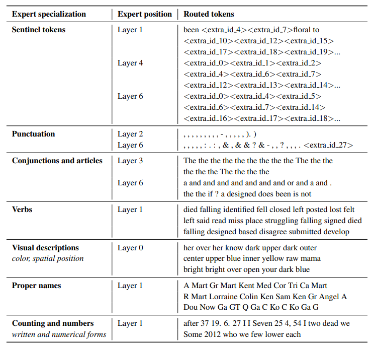

The Llama Hitchiking Guide to Local LLMs
Here are some terms that are useful to know when joining the Local LLM community.
LocalLlama: A Reddit community of practitioners, researchers, and hackers doing all kinds of crazy things with ML models.

LLM: A Large Language Model. Usually a transformer-based model with a lot of parameters…billions or even trillions.
Transformer: A type of neural network architecture that is very good at language tasks. It is the basis for most LLMs.
GPT: A type of transformer that is trained to predict the next token in a sentence. GPT-3 is an example of a GPT model…who could tell??
4.1 Auto-regressive: A type of model that generates text one token at a time. It is auto-regressive because it uses its own predictions to generate the next token. For example, the model might receive as input “Today’s weather” and generate the next token, “is”. It will then use “Today’s weather is” as input and generate the next token, “sunny”. It will then use “Today’s weather is sunny” as input and generate the next token, “and”. And so on.
Token: Models don’t understand words. They understand numbers. When we receive a sequence of words, we convert them to numbers. Sometimes we split words into pieces, such as “tokenization” into “token” and “ization”. This is needed because the model has a limited vocabulary. A token is the smallest unit of language that a model can understand.
Context length: The number of tokens that the model can use at a time. The higher the context length, the more memory the model needs to train and the slower it is to run. E.g. Llama 2 can manage up to 4096 tokens.
6.1 LLaMA: A pre-trained model trained by Meta, shared with some groups in a private access, and then leaked. It led to an explosion of cool projects. ü¶ô
6.2 Llama 2: An open-access pre-trained model released by Meta. It led to another explosion of very cool projects, and this one was not leaked! The license is not technically open-source but it‚Äôs still quite open and permissive, even for commercial use cases. ü¶ôü¶ô
6.3 RoPE: A technique that allows you to significantly expand the context lengths of a model.
6.4 SuperHot: A technique that allows expanding the context length of RoPE-based models even more by doing some minimal additional training.
Pre-training: Training a model on a very large dataset (trillion of tokens) to learn the structure of language. Imagine you have millions of dollars, as a good GPU-Rich. You usually scrape big datasets from the internet and train your model on them. This is called pre-training. The idea is to end with a model that has a strong understanding of language. This does not require labeled data! This is done before fine-tuning. Examples of pre-trained models are GPT-3, Llama 2, and Mistral.
7.1 Mistral 7B: A pre-trained model trained by Mistral. Released via torrent.
7.2 Phi 2: A pre-trained model by Microsoft. It only has 2.7B parametrs but it’s quite good for its size! It was trained with very little data (textbooks) which shows the power of high-quality data.
7.3 transformers: a Python library to access models shared by the community. It allows you to download pre-trained models and fine-tune them for your own needs
7.4 Base vs conversational: a pre-trained model is not specifically trained to “behave” in a conversational manner. If you try to use a base model (e.g. GPT-3, Mistral, Llama) directly to do conversations, it won’t work as well as the fine-tuned conversational variant (ChatGPT, Mistral Instruct, Llama Chat). When looking at benchmarks, you want to compare base models with base models and conversational models with conversational models.
Fine-tuning: Training a model on a small (labeled) dataset to learn a specific task. This is done after pre-training. Imagine you have a few dollars, as a good fellow GPU-Poor. Rather than training a model from scratch, you pick a pre-trained (base) model and fine-tune it. You usually pick a small dataset of few hundreds-thousands of samples. You then pass it to the model and train it on it. This is called fine-tuning. The idea is to end with a model that has a strong understanding of a specific task. For example, you can fine-tune a model with your tweets to make it generate tweets like you! (but please don’t). You can fine-tune many models in your gaming laptop! Examples of fine-tuned models are ChatGPT, Vicuna, and Mistral Instruct.
8.1 Mistral 7B Instruct: A fine-tuned version of Mistral 7B.
8.2 Vicuna: A cute animal that is also a fine-tuned model. It begins from LLaMA-13B and is fine-tuned on user conversations with ChatGPT.
8.3 Number of parameters: Notice the
-13Bin point 8.2. That’s the number of parameters in a model. Each parameter is a number (with certain precision), and is part of the model. The parameters are learned during pre-training and fine-tuning to minimize the error.Prompt: A few words that you give to the model to start generating text. For example, if you want to generate a poem, you can give the model the first line of the poem as a prompt. The model will then generate the rest of the poem!
Zero-shot: A type of prompt that is used to generate text without fine-tuning. The model is not trained on any specific task. It is only trained on a large dataset of text. For example, you can give the model the first line of a poem and ask it to generate the rest of the poem. The model will do its best to generate a poem, even though it has never seen a poem before! When you use ChatGPT, you often do zero-shot generation!
User: Write a poem about a llama _______________ Model: Graceful llama, in Andean air, Elegant stride, woolly flair. Mountains echo, mystic charm, Llama's gaze, a tranquil balm.Few-shot: A type of prompt that is used to generate text with fine-tuning. We provide a couple of examples to the model. This can improve the quality a lot!
User Input: Text: "The cat sat on the mat." Label: Sentence about an animal. Text: "The sun is incredibly bright today." Label: Sentence about weather. Classification Task: Classify the following text - "Rainy days make me want to stay in bed." Output: Label: Sentence about weather. Text: "Rainy days make me want to stay in bed." __________________ Model Label: Sentence about weather.Instruct-tuning: A type of fine-tuning that uses instructions to generate text ending in more controlled behavor in generating responses or performing tasks.
12.1 Alpaca: A dataset of 52,000 instructions generatd with OpenAI APIs. It kicked off a big wave of people using OpenAI to generate synthetic data for instruct-tuning. It costed about $500 to generate.
12.2 LIMA: A model that demonstrates strong performance with very few examples. It demonstrates that adding more data does not always correlate with better quality.
RLHF (Reinforcement Learning with Human Feedback): A type of fine-tuning that uses reinforcement learning (RL) and human-generated feedback. Thanks to the introduction of human feedback, the end model ends up being very good for things such as conversations! It kicks off with a base model that generates bunch of conversations. Humans then rate the answers (preferences). The preferences are used to train a Reward Model that generates a score for a given text. Using Reinforcement Learning, the initial LM is trained to maximize the score generated by the Reward Model. Read more about it here.
13.1 RL: Reinforcement learning is a type of machine learning that uses rewards to train a model. For example, you can train a model to play a game by giving it a reward when it wins and a punishment when it loses. The model will learn to win the game!
13.2. Reward Model: A model that is used to generate rewards. For example, you can train a model to generate rewards for a game. The model will learn to generate rewards that are good for the game!
13.3 ChatGPT: RLHF-finetuned GPT-3 model that is very good at conversations.
13.4 AIF: An alternative to human feedback…AI Feedback!
PPO: A type of reinforcement learning algorithm that is used to train a model. It is used in RLHF.
DPO: A type of training which removes the need for a reward model. It simplifies significantly the RLHF-pipeline.
15.1 Zephyr: A 7B Mistral-based model trained with DPO. It has similar capabilities to the Llama 2 Chat model of 70B parameters. It came out with a nice handbook of recipes.
15.2 Notus: A trained variation of Zephyr but with better filered and fixed data. It does better!
15.3 Overfitting: occurs in ML when a model learns the training data too well, capturing noise and specific patterns that do not generalize to new, unseen data, leading to poor performance on real-world tasks.
15.4 DPO Overfits Although DPO shows overfitting behaviors after one behavior, it does not harm downstream performance on chat evaluations. Did your ML teachers lie to us when they said overfitting was bad?
15.5 IPO: A change in the DPO objective which is simpler and less prone to overfitting.
15.6. KTO: While PPO, DPO, and IPO require pairs of accepted vs rejected generations, KTO just needs a binary label (accepted or rejected), hence allowing to scale to much more data.
15.7 trl: A library that allows to train models with DPO, IPO, KTO, and more!
Open LLM Leaderboard: A leaderboard where you can find benchmark results for many open-access LLMs.
17.1 Benchmark: A benchmark is a test that you run to compare different models. For example, you can run a benchmark to compare the performance of different models on a specific task.
17.2 TruthfulQA: A not-great benchmark to measure a model’s ability to generate truthful answers.
17.3 Conversational models: The LLM Leaderboard should be mostly to compare base models, not as much for conversational models. It still provides some useful signal about the conversational models, but this should not be the final way to evaluate them.
Chatbot Arena: A popopular crowd-sourced open benchmark of human preferences. It’s good to compare conversational models
MT-Bench: A multi-turn benchmark of 160 questions across eight domains. Each response is evaluated by GPT-4. (This presents limitations…what happens if the model is better than GPT-4?)
Mixture-of-Experts (MoE): A model architecture in which some of the (dense) layers are replaced with a set of experts. Each expert is a small neural network. There is a small network, router, that decides which expert to use for each token (read more here). Clarifications:
- A MoE is not an ensemble.
- If we say a MoE has 8 experts, it means each replaced dense layer is replaced with 8 experts. If there were 3 replaced layers, then there are 24 experts in total!
- We can activate multiple experts at the same time. For a given sentence, “hello world”, “hello might be sent to experts 1 and 2 while”world” to 2 and 4.
- The experts in a MoE do not specialize in a task. They are all trained on the same task, they just get different tokens! Sometimes they do specialize in certain types of tokens, as shown in this table from the ST-MoE paper.

19.1 GPT-4: A kinda good model, but we don’t know what it is. The rumors say it’s a MoE.
19.2 Mixtral: A MoE model released by Mistral. It has 47B parameters but only 12B parameters are used at a time, making it very efficient.
Model Merging: A technique that allows us to combine multiple models of the same architecture into a single model. Read more here.
20.1 Mergekit: A cool open-source tool to quickly merge repos.
20.2 Averaging: The most basic merging technique. Pick two models, average their weights. Somehow it kinda works!
20.3 Frankenmerge: It allows to concatenate layers from different LLMs, allowing you to do crazy things.
20.4 Goliath-120B: A frankenmerge that combines two Llama 70B models to achieve a 120B model
20.5 MoE Merging: (Not 100% about this one) Experimental branch in
mergekitthat allows building a MoE-like model combining different models. You specify which models and which types of prompts you want each expert to handle, hence ending with expert task-specialization.20.6 Phixtral: A MoE merge of Phi 2 DPO and Dolphin 2 Phi 2.
Local LLMs: If we have models small enough, we can run them in our computers or even our phones!
21.1 TinyLlama: A project to pre-train a 1.1B Llama model on 3 trillion tokens.
21.2 Cognitive Computations: A community (led by Eric Hartford) that is fine-tuning a bunch of models
21.3 Uncensored models: Many models have some strong alignment that prevent doing things such as asking Llama to kill a Linux process. Training uncensored models aims to remove specific biases engrained in the decision-making process of fine-tuning a model. Read more here.
21.4 llama.cpp: A tool to use Llama-like models in C++.
21.5 GGUF: A format introduced by llama.cpp to store models. It replaces the old file format, GGML.
21.6 ggml: Tensor library in ML, allowing projects such as llama.cpp and whisper.cpp (not the same as GGML, the file format).
21.7 Georgi Gerganov: The creator of llama.cpp and ggml!
21.8 Whisper: The state-of-the-art speech-to-text open source model.
21.9 OpenAI: A company that does closed source AI. (kidding, they open-sourced Whisper!)
21.10 MLX: A new framework for Apple devices that allows easy inference and fine-tuning of models.
- Local LLM tools: If you don’t know how to code, there are a couple of tools that can be useful
22.1 Oobabooga: A simple web app that allows you to use models without coding. It’s very easy to use!
22.2 LM Studio: A nice advanced app that runs models on your laptop, entirely offline.
22.3 ollama: An open-source tool to run LLMs locally. There are multiple web/desktop apps and terminal integrations on top of it.
22.4 ChatUI: An open-source UI to use open-source models.
Quantization: A technique that allows us to reduce the size of a model. It is done by reducing the precision of the model’s weights. For example, we can reduce the precision from 32 bits to 8 bits. This reduces the size of the model by 4 times! The model will (sometimes) be less accurate but it will be much smaller. This allows us to run the model on smaller devices such as phones.
23.1 TheBloke: A bloke that quantizes models. As soon as a model is out, he quantizes it! See their HF Profile.
23.2 Hugging Face: A platform to find and share open-acces models, datasets, and demos. It’s also a company that has built different OS libraries (and where I work!)
23.3. Facehugger: A monster from the Alien movie. It should also be an open source tool. It’s not yet.
23.4. GPTQ: A popular quantization technique.
23.5 AWQ: Another popular quantization technique.
23.6 EXL2: A different quantization format used by a library called exllamav2 (among many others)
23.7 LASER: A technique that reduces the size of the model and increases its performance by reducindg the rank of specific matrices. It requires no additional training.
PEFT: Parameter-Efficient Fine-Tuning - It’s a family of methods that allow fine-tuning models without modifying all the parameters. Usually, you freeze the model, add a small set of parameters, and just modify it. It hence reduces the amount of compute required and you can achieve very good results!
24.1 peft: A popular OS library to do PEFT! It’s used in other projects such as
trl.24.2 adapters: Another popular library to do PEFT.
24.3.unsloth: A higher-level library to do PEFT (using QLoRA)
24.4. LoRA: One of the most popular PEFT techniques. It adds low-rank “update matrices”. The base model is frozen and only the update matrices are trained. This can be used for image classification, teaching Stable Diffusion the concept of your pet, or LLM fine-tuning.
QLoRA: A technique that combines LoRAs with quantization, hence we use 4-bit quantization and only update the LoRA parameters! This allows fine-tuning models with very GPU-poor GPUs.
25.1. Tim Dettmers: A researcher that has done a lot of work on PEFT and created QLoRA.
25.2. Guanaco (model): A LLaMA fine-tune using QLoRA tuning.
axolotl: A cute animal that is also a high-level tool to streamline fine-tuning, including support for things such as QLoRA.
Nous Research: An open-source Discord community turned company that releases bunch of cool models.
Multimodal: A single model that can handle multiple modalities. For example, a model that can generate text and images at the same time. Or a model that can generate text and audio at the same time. Or a model that can generate text, images, and audio at the same time. Or a model that can generate text, images, audio, video, smells, tastes, feelings, thoughts, dreams, memories, consciousness, souls, universes, gods, multiverses, and omniverses at the same time. (thanks ChatGPT for your hallucination)
28.1 Hallucination: When a model cangenerates responses that may be coherent but are not actually accurate, leading to the creation of misinformation or imaginary scenarios…such as the one above!
28.2 LlaVA: A multimodal model that can receive images and text as input and generate text respones.
Bagel: A process which mixes a bunch of supervised fine-tuning and preference data. It uses different prompt formats, making the model more versatile to all kinds of prompts.
Code Models: LLMs that are specifically pre-trained for code.
30.1. Big Code Models Leaderboard: A leaderboard to compare code models in the HumanEval dataset.
30.2. HumanEval: A very small dataset of 164 Python programming problems. It is translated to 18 programming languages in MultiPL-E.
30.3 BigCode: An open scientific collaboration working in code-related models and datasets.
30.4 The Stack: A dataset of 6.4TB of permissible-licensed code data covering 358 programming languages.
30.5 Code Llama: The best base code model. It’s based on Llama 2.
30.6 WizardLM: A research team from Microsoft…but also a Discord community.
30.7 WizardCoder: A code model released by WizardLM. Its architecture is based on Llama
Flash Attention: An approximate attention algorithm which provides a huge speedup.
31.1 Flash Attention 2: An upgrade to the flash attention algorithm that provides even more speedup.
31.2. Tri Dao: The author of both techniques and a legend in the ecosystem.
I hope you enjoyed this read! Feel free to suggest new terms or corrections in the comments below. I’ll keep updating this post as new terms come up.